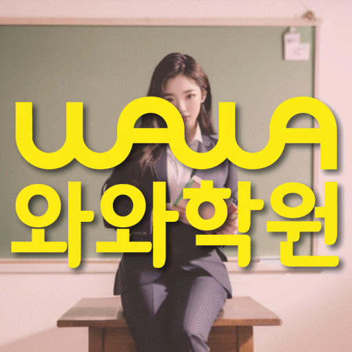

ELEMENTARY MATH
신방동 초등 수학학원
신방동 초등 수학학원 선택 전 기본부터 장기 학습 계획까지 살피는 학습, 개념 설명·적용과 과제·복습 루틴의 현재선, 학교 수학과 가정 복습 순서를 확인하세요.
01 Quick answer
신방동 초등 수학: 개념 설명·적용과 과제·복습 루틴 점검
신방동의 ‘기본부터 장기 학습 계획까지 살피는 학습’은 진도보다 아이가 실제로 수행한 흔적과 설명 기록에서 판단합니다. 확인 자료: 개념 설명·대표 문제 기록을 먼저 봅니다. ‘단원 핵심어를 설명한 메모와 대표 문제에서 그 개념을 선택한 이유’를 확인하고 해당 쪽수와 날짜를 적으세요. 이번 주 행동: 주간표에 ‘개념을 그림이나 말로 설명한 뒤 조건이 조금 달라진 대표 문제에 적용하기’를 실행할 날짜와 재확인일을 나누어 적으세요. 재확인 기준: ‘숫자와 표현이 바뀐 새 문제에서도 같은 개념을 골라 사용 이유를 말하는지’를 살핀 날짜를 함께 남기세요.
확인 기준
신방동 학생의 개념 설명·적용 관련 활동을 시작할 날짜와 과제·복습 루틴을 확인할 날짜를 나란히 적되 학년·시간표는 이용 조건으로 구분합니다.


 010-6839-8283
010-6839-8283학습 답변 요약
핵심 주제는 ‘기본부터 장기 학습 계획까지 살피는 학습’입니다. 개념 설명·적용과 과제·복습 루틴의 출발점을 확인하고, 계산 과정·검산 및 풀이 과정·서술의 활동·점검 기록과 학교·센터 사실을 분리해 살펴봅니다.
신방동 초등 수학: 기본부터 장기 학습 계획까지 살피는 학습
신방동 초등 수학 상담의 첫 주제는 ‘개념 설명·적용과 과제·복습 루틴의 현재선’입니다. ‘풀이 방법의 이름만 외우지 않고 왜 그 방법을 쓰는지 자기 말로 설명하는지’를 묻고 아이의 답과 실제 기록이 맞는지 확인하세요.
‘기본부터 장기 학습 계획까지 살피는 학습’은 먼 결과를 약속하기보다 첫 주 기준선·중간 실행 기록·마지막 주 재확인의 세 구간으로 나눕니다. 매주 개념 설명·적용과 과제·복습 루틴 중 달라진 한 항목만 다음 계획에 반영하세요. ‘기본부터 장기 학습 계획까지 살피는 학습’에 필요한 현재선은 개념 설명·적용의 실제 자료로 확인합니다. 처음 멈춘 지점과 다시 해 본 지점을 표시하고 재확인 때 새 문제에서 개념을 고르고 사용 이유를 설명한 범위를 적으세요.
개념 설명·적용과 과제·복습 루틴 기록이 보여 주는 수학 학습의 현재선
많은 자료를 모으기보다 역할이 다른 두 기록을 고르세요. ‘단원 핵심어를 설명한 메모와 대표 문제에서 그 개념을 선택한 이유’는 현재선, ‘주간 계획표, 시작·완료 시각과 다음 날 남은 질문·다시 푼 문제’는 문제 과정으로 두고 같은 관찰 기간 안에서 각 기록의 날짜를 나누어 확인합니다.
신방동 기록표를 개념 설명·적용과 과제·복습 루틴 두 칸으로 나누세요. 각 칸에 자료 위치·실행일·재확인일을 적어 두 영역의 기록을 섞지 않습니다.
개념 설명·적용과 과제·복습 루틴: 두 학습 자료의 확인 날짜를 구분하는 법
신방동 기록표에는 첫 칸의 확인 항목으로 개념 설명 메모·대표 문제의 선택 이유를, 둘째 칸의 확인 항목으로 주간 계획·시작·완료·질문 기록을 적습니다. 두 칸의 첫 기록과 재확인 결과만 같은 기준으로 비교하세요.
신방동에서는 개념 설명·적용을 확인할 개념 설명 메모·대표 문제의 선택 이유와 과제·복습 루틴을 확인할 주간 계획·시작·완료·질문 기록을 다른 줄에 둡니다. ‘개념을 그림이나 말로 설명한 뒤 조건이 조금 달라진 대표 문제에 적용하기’와 ‘새 문제·오답 다시 풀기·질문을 다른 칸에 두고 완료 흔적을 한 줄로 남기기’를 각각 해당 자료에서 짧게 실행하세요. 각 자료에서 도움받은 지점과 아이가 혼자 마친 범위, 다시 볼 날짜를 따로 적어 어느 기능을 먼저 보완할지 정합니다.
두 자료에서 모두 어려움이 보이면 개념 설명·적용과 과제·복습 루틴 중 먼저 도울 영역을 정합니다. 한쪽에서만 막혔다면 자료와 행동을 섞지 말고 해당 영역의 재확인일만 따로 기록하세요.
신방동 센터 정보와 과제·복습 루틴 항목 분리
참고 학교로 신용초 등이 기재돼 있지만, 해당 학교의 모든 과정이 열린다는 뜻은 아니므로 현재 범위를 다시 확인해야 합니다.
제공 자료에서 확인되는 초등 수학 가능 학년은 초3·초4·초5·초6입니다. 아이의 개념 설명·적용 현재 상태는 최근 교재로, 센터 시간표는 최신 안내로 각각 확인하세요. 이 페이지의 센터 기준은 와와학습코칭센터 신방점, 제공 위치는 충청남도 천안시 동남구 신방동 886 학산프라자 A동 3층 304호,305호입니다. 교습비 자료와 제공 주소까지의 이동 시간은 서로 다른 사실 항목으로 적으세요.
개념 설명·적용 기록을 다음 행동으로 잇는 7일 계획
첫 주에는 ‘단원 핵심어를 설명한 메모와 대표 문제에서 그 개념을 선택한 이유’에서 한 가지 병목만 고릅니다. 실행 항목은 ‘개념을 그림이나 말로 설명한 뒤 조건이 조금 달라진 대표 문제에 적용하기’로 정하고 새 교재나 추가 문제는 재확인 뒤에 결정하세요.
‘숫자와 표현이 바뀐 새 문제에서도 같은 개념을 골라 사용 이유를 말하는지’를 첫 기록과 비교하고 달라진 근거를 확인한 뒤 다음 주 행동을 정합니다. 재확인 결과 과제·복습 루틴 관련 행동을 시작하기로 했다면 이 주제를 위한 계획의 시작 분량을 아이가 혼자 끝낸 범위보다 조금 작게 정하고 첫 기록을 남기세요. 한 주 실행 뒤 완료 여부·미완료 이유·조정한 분량을 확인합니다.
개념 설명·적용과 과제·복습 루틴 상담 전 준비할 자료와 등록 확인 항목
학교 진도표·최근 교재와 학습지·오답 기록 중 실제 표시가 있는 자료를 고릅니다. ‘개념 암기와 실제 문제 적용을 어떤 질문과 풀이 기록으로 구분하는지’와 ‘문제 수보다 완료·질문·다시 확인·계획 수정의 주기를 어떻게 살피는지’를 메모해 가세요.
답변이 개념 설명·적용 실행 항목의 실행 계획과 ‘숫자와 표현이 바뀐 새 문제에서도 같은 개념을 골라 사용 이유를 말하는지’를 다시 확인할 날짜로 이어지는지 확인하세요. 운영 정보는 확인된 사실만 따로 기록합니다.
- 아이 자료개념 설명·적용을 확인할 자료 위치와 아이가 도움 뒤 다시 한 흔적
- 학습 일정실행 날짜: ‘새 문제·오답 다시 풀기·질문을 다른 칸에 두고 완료 흔적을 한 줄로 남기기’ / 재확인 날짜: ‘한 주 뒤 미완료 이유와 반복 오답을 보고 분량과 도움 요청 시점을 조정하는지’
- 재확인개념 설명·적용 기록을 다시 볼 날짜와 그날 비교할 새 문제에서 개념을 고르고 사용 이유를 설명한 범위
- 이용 조건수학 가능 학년(초3·초4·초5·초6)·시간표·교습비·통학 동선
02 Parent perspective
신방동 초등 수학 학부모 상담 상황
아래 신방동 초등 수학 상담 장면은 실제 이용 후기나 특정 학생의 성과가 아닌 준비용 가상 예시입니다. 학습 결과는 학생의 출발점과 실천 정도에 따라 달라질 수 있습니다.
신방동 학부모가 최근에 푼 학습지 한 장으로 상담을 준비하는 가상 상황입니다. ‘아이의 개념 설명·적용 기록’을 구체화하기 위해 개념 설명·적용 자료와 과제·복습 루틴 자료에서 확인한 기록을 나누어 남깁니다.
신방동 상담 뒤 등록 여부를 비교하는 가상 장면입니다. 학부모는 수학 가능 학년(초3·초4·초5·초6)·교습비·시간표를 사실 항목으로 적고 계산 과정·검산을 살필 날짜는 학습 계획에 따로 남깁니다.
03 FAQ
신방동 초등 수학 자주 묻는 질문
학생 자료, 가능 학년과 실제 이용 조건을 나누어 답했습니다.
신방동 초등 수학에서 ‘개념 설명·적용의 현재선 확인’은 어떤 자료부터 확인하나요?
첫 확인 자료는 ‘단원 핵심어를 설명한 메모와 대표 문제에서 그 개념을 선택한 이유’입니다. 이번 주에는 ‘개념을 그림이나 말로 설명한 뒤 조건이 조금 달라진 대표 문제에 적용하기’를 실행하고, 다음 확인에서 ‘숫자와 표현이 바뀐 새 문제에서도 같은 개념을 골라 사용 이유를 말하는지’를 살피세요.
개념 설명·적용과 과제·복습 루틴 진단 기록은 어떻게 나누나요?
개념 설명·적용과 과제·복습 루틴을 다른 칸에 적으세요. 각 칸에 자료 위치·이번 주 행동·다시 볼 날짜를 하나씩 남기면 두 영역의 결과를 섞지 않고 비교할 수 있습니다.
개념 설명·적용과 과제·복습 루틴: 개념 설명 메모·대표 문제의 선택 이유와 주간 계획·시작·완료·질문 기록은 어떻게 나눠 확인하나요?
개념 설명·적용은 개념 설명 메모·대표 문제의 선택 이유를, 과제·복습 루틴은 주간 계획·시작·완료·질문 기록을 확인 항목으로 둡니다. 재확인일에는 첫 수행과 같은 기준으로 새 문제에서 개념을 고르고 사용 이유를 설명한 범위와 완료 여부·미완료 이유·조정한 분량을 각각 비교하세요.
상담 전 계산 과정·검산과 풀이 과정·서술을 확인하려면 어떤 자료를 가져가나요?
학교 진도표와 표시가 남은 학습 자료를 한 묶음으로 준비하세요. 계산 과정·검산을 확인할 자료에서 막힌 이유와 풀이 과정·서술의 확인 방식을 묻고 다음 점검 날짜를 남깁니다.
신방동 초등 수학 상담에서 가능 학년과 참고 학교는 어떻게 확인하나요?
신방동의 수학 가능 학년 표기는 초3·초4·초5·초6입니다. 실제 수업 시간과 현재 개설 반은 상담 시점의 시간표로 대조하세요. 신용초 등은 주변 학교를 확인하기 위한 명칭입니다. 재학 학교와 학습 범위를 알린 뒤 현재 자료로 학습 계획을 세울 수 있는지 물어보세요.
04 Related
신방동 관련 학원·상담 페이지
같은 지역의 과목 조합과 학년 카테고리, 앞뒤 지역 안내를 함께 확인하세요.